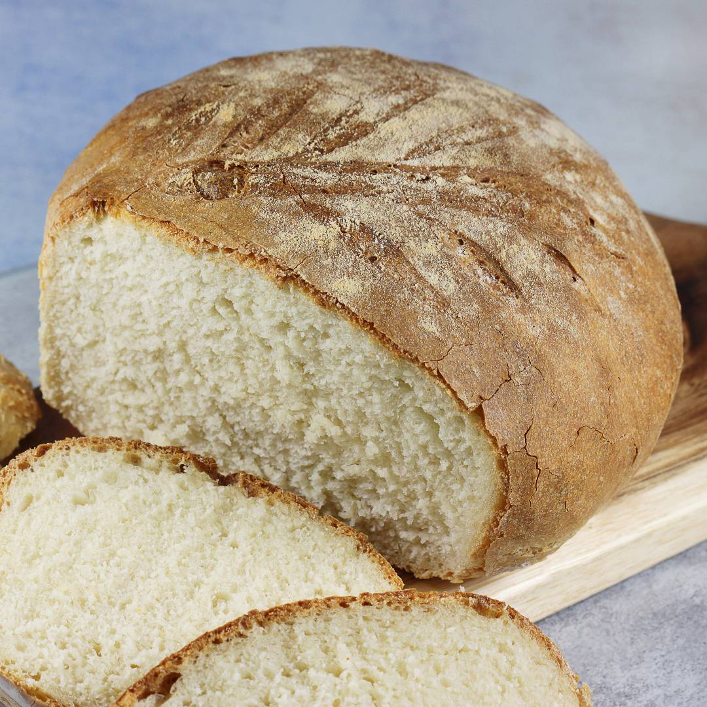

Home
Bread

A very easy recipe for wheat bread with instant yeast
This bread has super cirpy crust, rises veru well, and is very soft on the inside
The time to preapre dough for this bread is around 20 minutes
The total rising time is 1 hour and 30 minutes and the baking time is around 30 minutes.
Ingredients
- 450 grams of wheat flour - preferably type 00
- 250 milliliters of warm water
- a spoonful of light olive oil
- 15 grams of fresh yeast
- a flat teaspoon of salt
- a flat teaspoon of sugar
Preparation
- In one bowl, combine a little over two and a half cups of all-purpose flour, approximately 450 grams. Pour in one cup of slightly warm water. Add a level teaspoon each of salt, sugar, and dried yeast. Add a tablespoon of light olive oil or your favorite vegetable oil.
- Knead the dough by hand or in a mixer with a dough hook for at least 10 minutes. It should form an elastic and compact ball.
- Place the dough ball in a bowl covered with a damp cloth or clear plastic wrap. Set the bowl aside, for example, on a windowsill above a radiator, for at least 60 minutes.
- After an hour, the dough should have at least doubled in size. If it hasn't risen that much, wait longer... up to two hours. You can place it in a slightly warm oven.
- Place the risen bread dough on a lightly floured surface. Shape it into a ball and place it in the baking dish, or place it on a baking sheet dusted with flour. You can also lightly score the top of the loaf with a sharp knife. Sprinkle the top with flour and cover with a cotton cloth. Set aside for 30 minutes for the final rise.
- Place the loaf pan with the risen bread in an oven preheated to 230-250 degrees Celsius. Select the middle rack with the top/bottom heating element. Bake the loaf for about 30 minutes. After 15 minutes of baking, you can open the oven briefly and spray the wheat loaf with water. This will result in a crispier and browner crust.
- After about 30 minutes (if the bread has risen and is already well browned), you can turn off the oven. Wheat bread can be removed from the oven immediately after baking. It's best to immediately transfer it to a cooling rack. Wheat bread slices perfectly after it has cooled completely.
Enjoy your bread!